Катушки индуктивности и дроссели
Если взять какой-нибудь металический стержень (к примеру обыкновенный гвоздь или болт ), намотать на него несколько витков изолированного провода и подать на концы этого провода электрический ток, то мы получим простейший электромагнит.
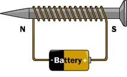
Рис. 1 - Простейший электромагнит
Произошло это потому, что при прохождении электрического тока, в металическом стержне, (в электротехнике - сердечник или магнитопровод), образовалось электромагнитное поле. На практике сердечники изготавливаются из ферромагнитных материалов или специальной трансформаторной магнитомягкой стали.
Индуктивность
Если через провод течет электрический ток, то он вокруг себя создаст магнитное поле (рис. 2).
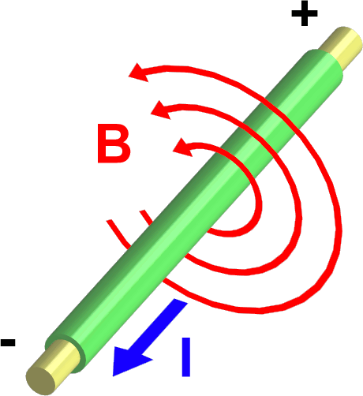
Рис. 2 - Магнитное поле. В - магнитное поле, I - сила тока.
Если провод намотаем в спираль и подадим на его концы электрический ток, то вокруг спирали (соленоида) появится магнитное поле с магнитными силовыми линиями как показано на рис. 3.
Чем больше линий магнитного поля пересекут площадь этого соленоида, тем больше будет магнитный поток (Ф). Так как по всей этой конструкции течет электрический ток, то значит в этот момент он обладает какой-то силой тока (I). А коэффициент между магнитным потоком и силой тока называется индуктивностью (L):
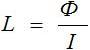
С научной же точки зрения, индуктивность - это способность извлекать энергию из источника электрического тока и сохранять ее в виде магнитного поля. Если ток в катушке увеличивается, магнитное поле вокруг катушки расширяется, а если ток уменьшается - магнитное поле сжимается.
Индуктивность измеряется в Генри. На практике используется кратная величина: милиГенри (мГн) и микроГенри (мкГн) .
Катушка индуктивности обладает также очень интересными свойствами. При подаче на катушку электрического тока постоянного напряжения, в катушке возникает напряжение, противоположное напряжению электрического тока и оно потом исчезает через несколько долей секунд. Это противоположное напряжение называется ЭлектроДвижущейСилой самоиндукции, или ЭДС самоиндукции. Это ЭДС зависит от индуктивности катушки. Поэтому в момент подачи напряжения на катушку сила тока в течение долей секунд плавно меняет свое значение от 0 до некоторого значения, потому что напряжение, в момент подачи электрического тока, также меняет свое значение от ноля и до установившегося значения, согласно Закон Ома:
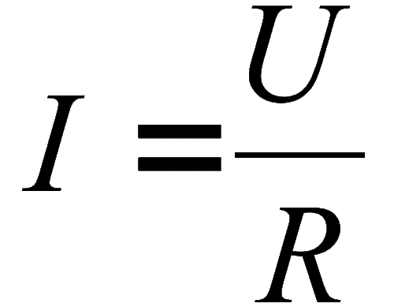
где
I - сила тока в катушке,
U - напряжение в катушке,
R - сопротивление катушки.
Как мы видим по формуле, напряжение меняется от нуля и до напряжения, подаваемого в катушку, следовательно и ток тоже будет меняться от нуля и до какого то значения. Сопротивление катушки постоянное.
Если разомкнуть цепь "катушка индуктивности" - "источник тока", то ЭДС самоиндукции будет приплюсовываться к напряжению, которое мы подали на катушку. Следовательно и ток будет в самом начале больше, а потом тихонько спадет до нуля. Время спада силы тока также зависит от индуктивности катушки.
Вывод: При подаче на катушку электрического тока, сила тока будет плавно увеличиваться, а при снятии электрического тока с катушки, сила тока резко возрастет в катушке и плавно убавиться до нуля. То есть,сила тока в катушке мгновенно измениться не может. Это в электронике называют первым законом коммутации.
Если катушку индуктивности разместить на отдельном каркасе, сделать сердечник регулируемый и параллельно дросселю подключить конденсатор, то мы получим - колебательный контур.
Катушки индуктивности делятся в основном на два класса: с магнитным и немагнитным сердечником.
Спираль из провода (рис. 3) является катушкой индуктивности с немагнитным сердечником. Воздух - это немагнитный сердечник. Такие катушки также могут быть намотаны на какой-нибудь цилиндрической бумажной трубочке. Индуктивность катушек с немагнитным сердечником используется, когда индуктивность не превышает 5 мГн.
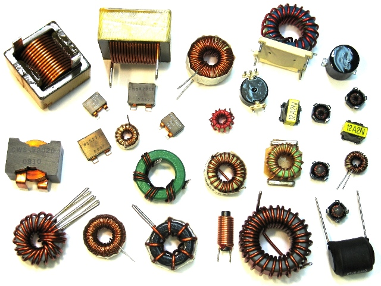
Рис. 4 - Катушки индуктивности с магнитным сердечником
В катушках индуктивности с магнитным сердечником используют сердечники из феррита и железных пластин. Сердечники повышают индуктивность катушек в разы. Сердечники в виде кольца (тороидальные) позволяют получить большую индуктивность, чем сердечники из цилиндра. Для катушек средней индуктивности используются ферритовые сердечники (рис. 5).
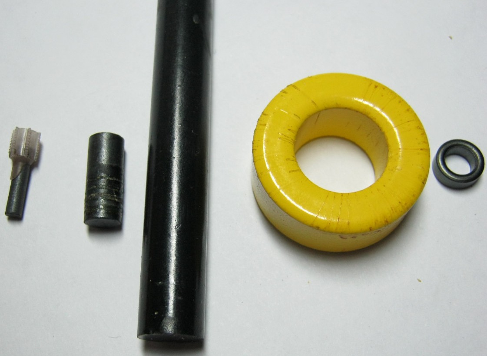
Рис. 5 - Сердечники для катушек индуктивности
Катушки с большой индуктивностью делают как трансформатор с железным сердечником, но есть одно различие: у них имеется только одна первичная обмотка (рис. 6).
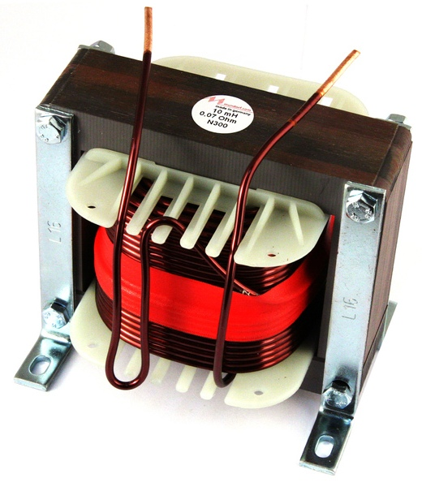
Рис. 6 - Катушка с большой индуктивностью
Дроссели
Дроссель - это катушка индуктивности, обладающее высоким сопротивлением к переменному току и низким к постоянному. Происходит это потому, что переменный ток, проходя через дроссель, образует в сердечнике электромагнитное поле, которое в свою очередь, способствует образованию противоположной силы: так назваемой электродвижущей силы (ЭДС) самоиндукции. И чем больше наведенная энергия (зависит от колличества витков и материала сердечника), тем выше будет наведенное поле и естественно ЭДС самоиндукции.
Обычно дроссели включаются в цепях питания усилительных устройств. Дроссели предназначены для защиты источников питания от попадания в них высокочастотных сигналов (ВЧ сигналов). На низких частотах (НЧ частоты) они используются в фильтрах цепей питания и обычно имеют металлические или ферритовые сердечники.
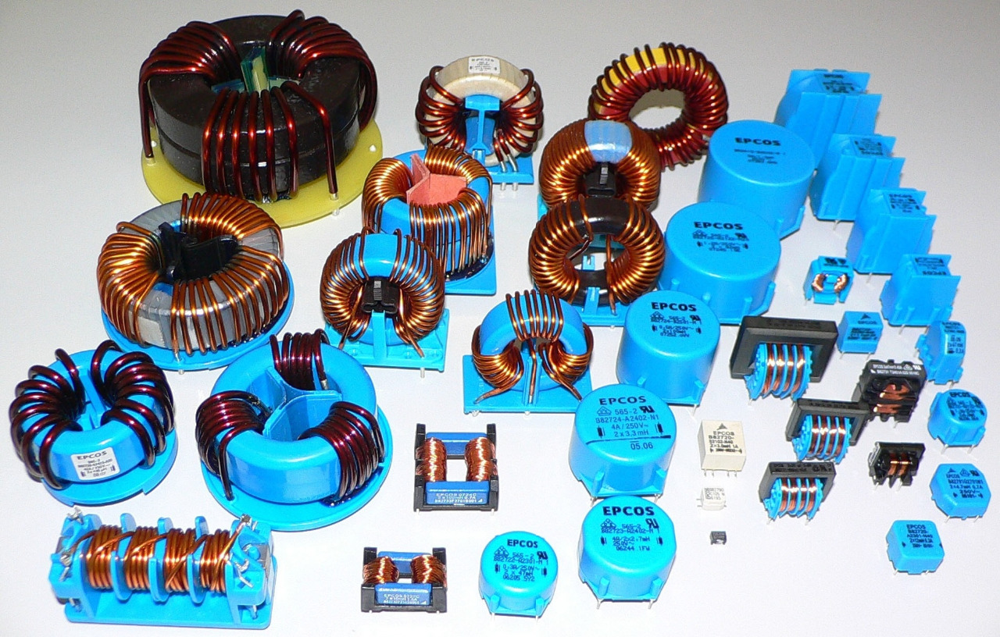
Рис. 7 - Силовые дроссели
Также существует еще один особый вид дросселей - это сдвоенный дроссель. Он представляет из себя две встречно намотанных катушки индуктивности. За счет встречной намотки и взаимной индукции более эффективны. Сдвоенные дроссели получили широкое распространение в качестве входных фильтров блоков питания, а также в звуковой технике.
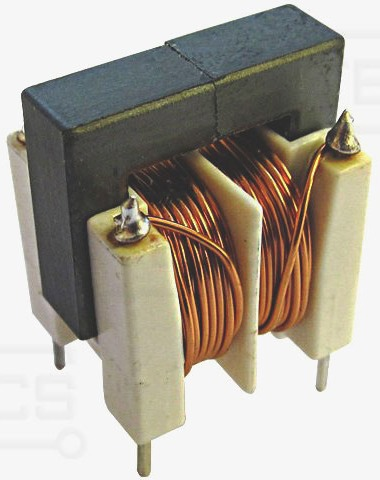
Рис. 8 - Сдвоенный дроссель
Катушка индуктивности играет в электронике очень большую роль, особенно в приемо-передающей аппаратуре. На катушках индуктивности строятся также различные фильтры для электронной радиоаппаратуры, а в электротехнике ее используют также в качестве ограничителя скачка силы тока.
Условное графическое обозначение катушек индуктивности
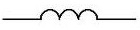 |
без сердечника |
| с ферритовым сердечником | |
| с магнитным сердечником | |
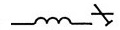 |
с подстроечным ферритовым сердечником |
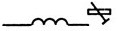 |
с подстроечным немагнитным сердечником |
Последовательное и параллельное соединение индуктивностей
При последовательном соединении индуктивностей их общая индуктивность равна сумме индуктивностей:
Lобщ=L1+L2+...+Ln
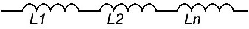
Рис. 9 - Последовательное соединение индуктивностей
При параллельном соединении их общая индуктивность выяисляют из следующей формулы:
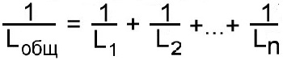
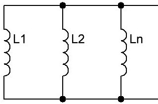
Рис. 10 - Параллельное соединение индуктивностей
Приведенные формулы справедливы при условиии, что индуктивности пространственно разнесены. Это связано с тем, что при близком расположении друг друга их магнитные поля будут влиять с друг другом, и поэтому значения индуктивностей будут неправильны. Не ставьте на одну железную ось два и более тороидальных катушек, это может привести к неправильным показаниям общей индуктивности.
Смотри также:
Исследование свойств катушки индуктивности